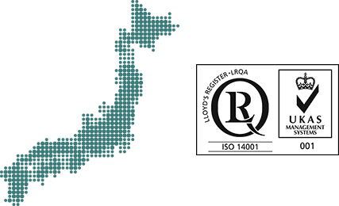
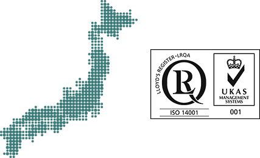

ปรัชญาการจัดการ
สิ่งแวดล้อมของเรา
เราระลึกถึงและแบ่งปันการตระหนักรู้เกี่ยวกับวิกฤตด้านสิ่งแวดล้อมอยู่เสมอ และตั้งใจที่จะก้าวไปข้างหน้าอย่างมั่นใจร่วมกับกิจกรรมด้านสิ่งแวดล้อมที่มุ่งมั่นจะพัฒนาสังคมที่ยั่งยืนโดยร่วมมือกับวัฏจักรธรรมชาติของโลก เราติดตามกิจกรรมด้านสิ่งแวดล้อมโดยการคำนึงถึงสภาวะของสิ่งแวดล้อมโลก กระแสนิยมด้านเทโนโลยีเกี่ยวกับการรักษาสิ่งแวดล้อม และคุณภาพและระดับผลกระทบต่อสิ่งแวดล้อมของกิจกรรมและวงจรชีวิตของผลิตภัณฑ์ของเรา
Hidetaka Yoshikawa, ประธานบริษัทและประธานกรรมการบริหาร
บริษัท Takara Belmont